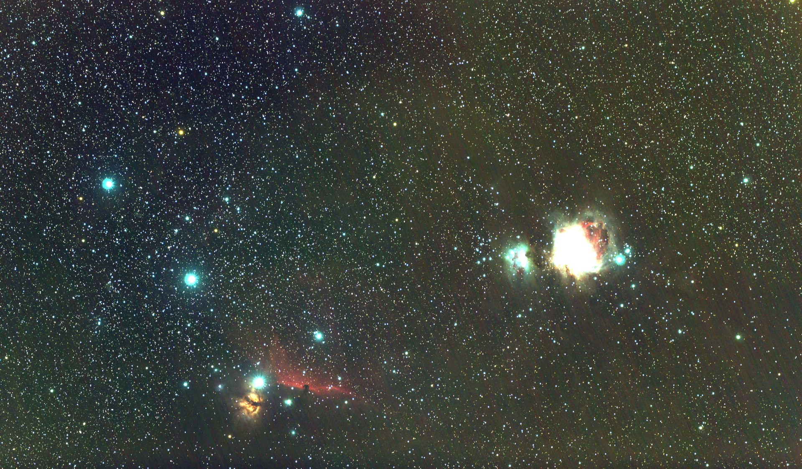
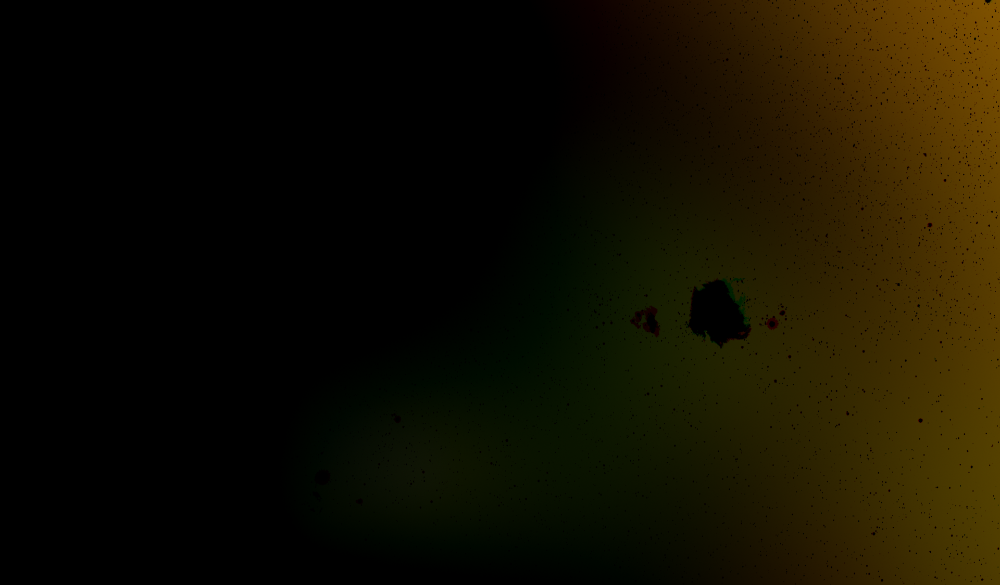
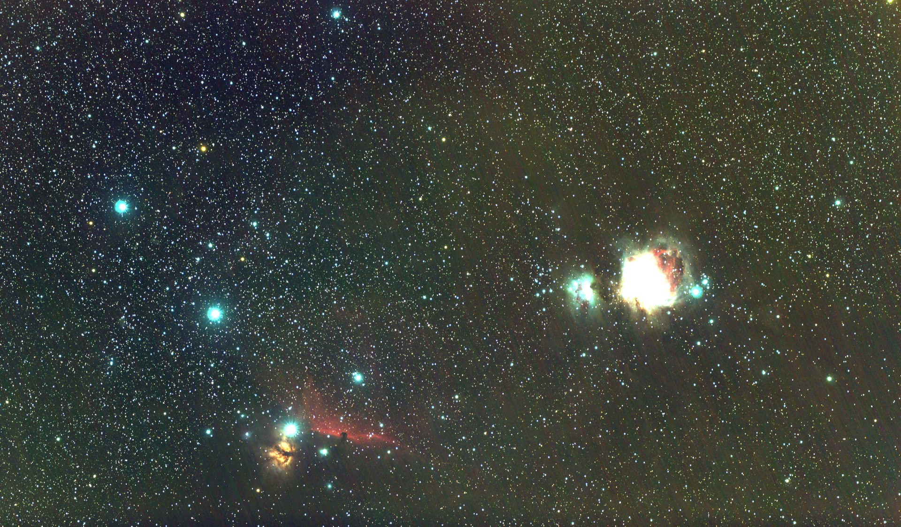
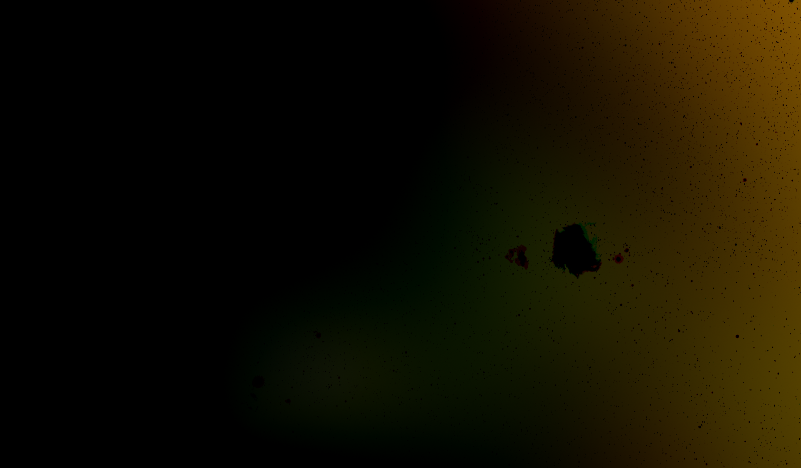
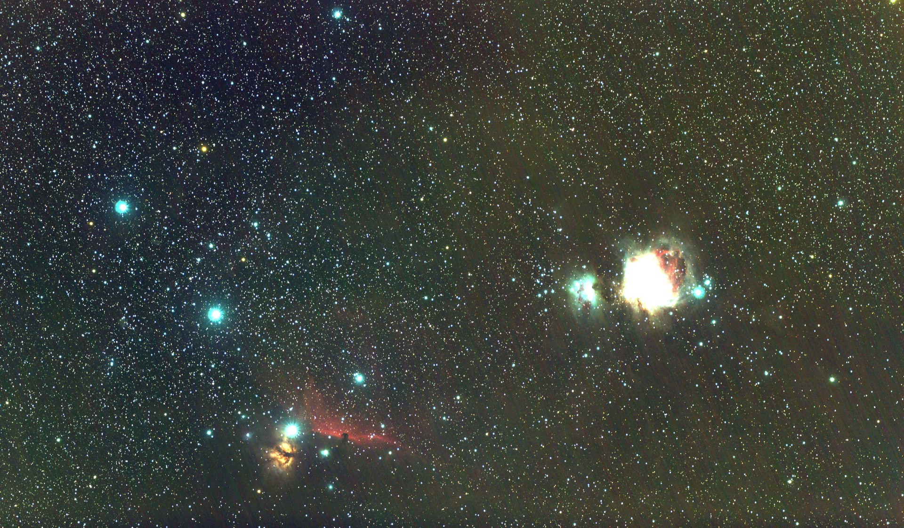
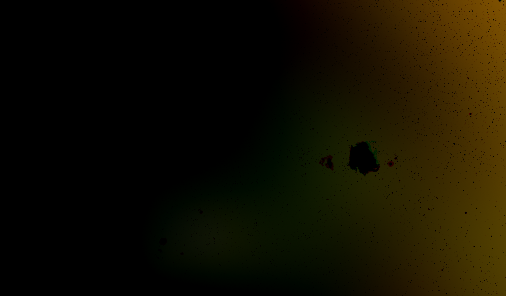
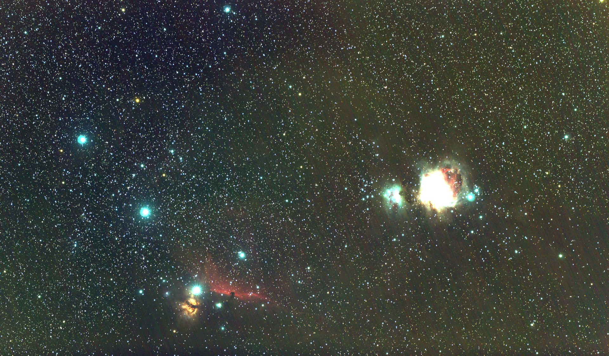
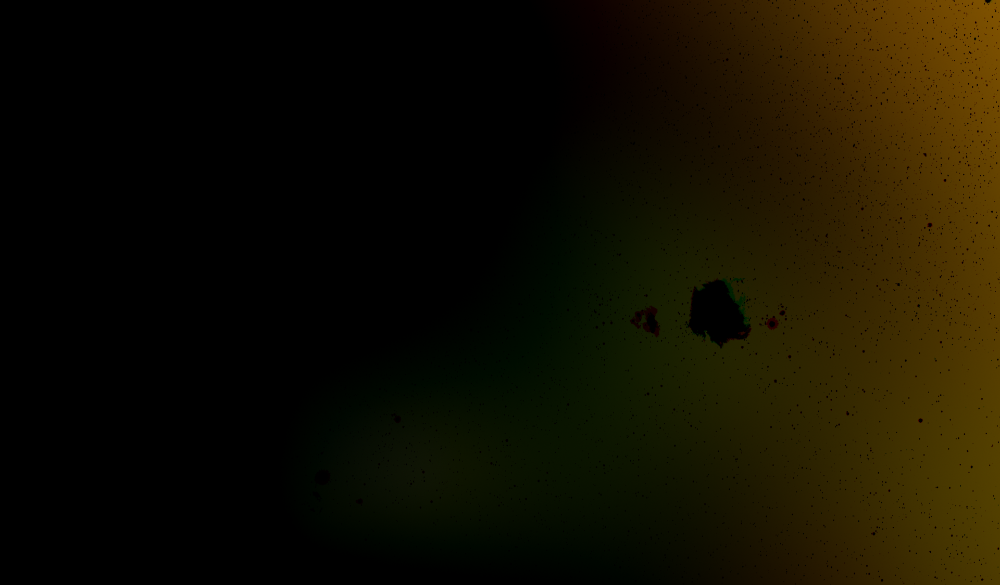

Le projet d'analyse d'image de l'espace m'a permis de plonger dans les domaines fascinants de la reconnaissance d'images et de l'astronomie. J'ai utilisé des techniques de traitement d'images pour analyser des photographies satellites.
🎯 En travaillant sur ce projet, j'ai appris à appliquer des techniques de traitement d'images avec Python, y compris l'utilisation de bibliothèques comme OpenCV et PIL. J'ai également exploré l'astrophotographie et l'analyse de données spatiales pour identifier des structures telles que des galaxies, des nébuleuses, et des étoiles.
| 🔧 Outil | 📖 Description | 📚 Ce que j'ai appris |
|---|---|---|
| 🐍 Python | Langage de programmation utilisé pour analyser les images. | J'ai appris à utiliser Python pour manipuler des images et extraire des données utiles à partir d'elles. |
| 🖼️ OpenCV & PIL | Bibliothèques pour le traitement d'images. | J'ai exploré les techniques de filtrage, de détection de contours, et de segmentation des images spatiales. |
| 🌌 Astrophotographie | Utilisation d'images spatiales pour l'analyse scientifique. | J'ai appris à interpréter les images astronomiques pour identifier des objets célestes tels que les étoiles et les galaxies. |
Les règles de l'analyse d'images sont les suivantes :